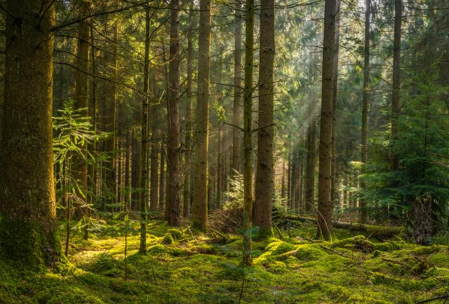
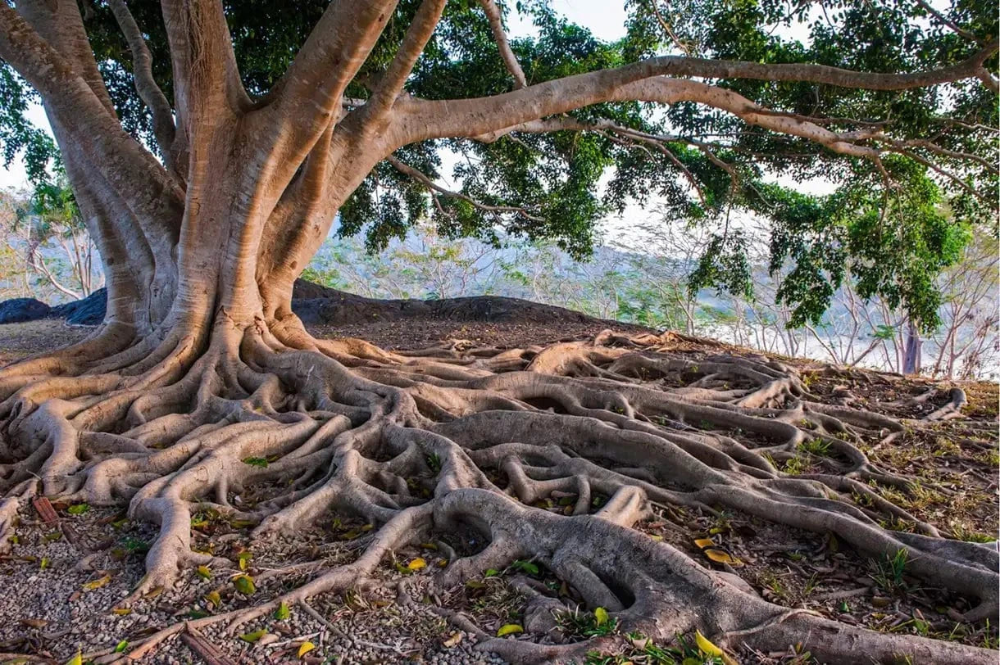
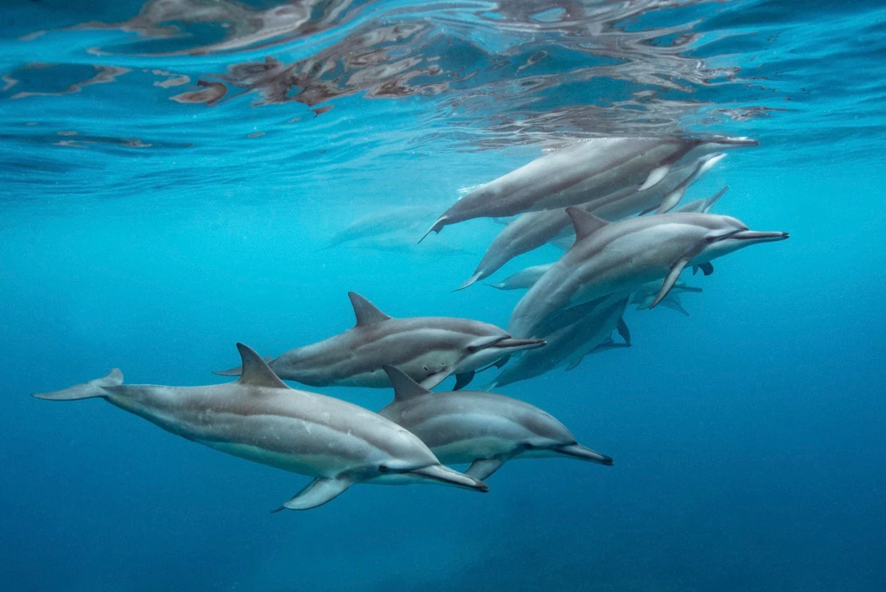
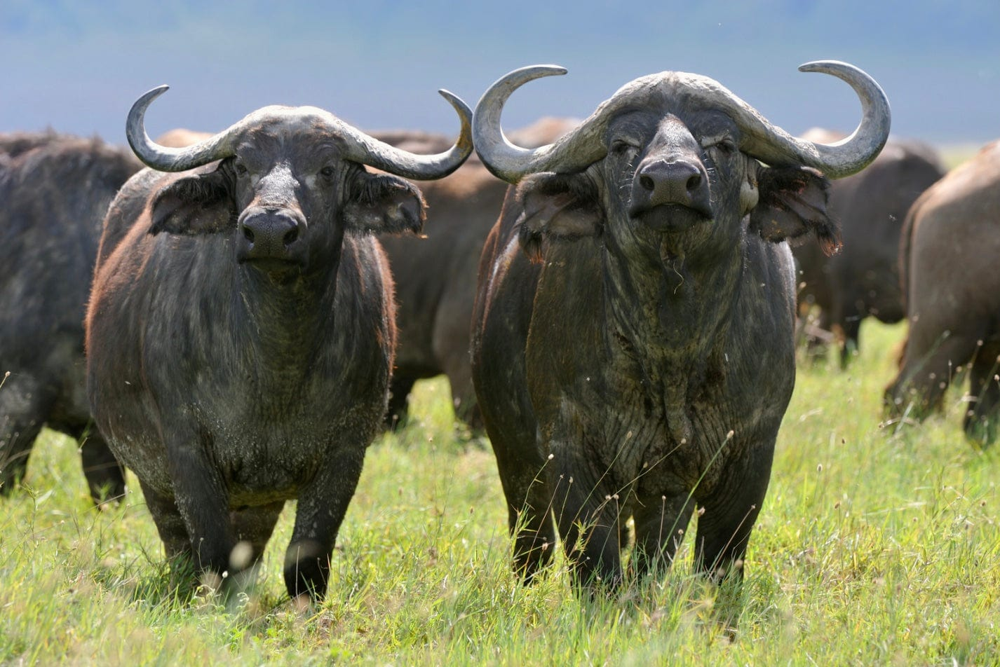
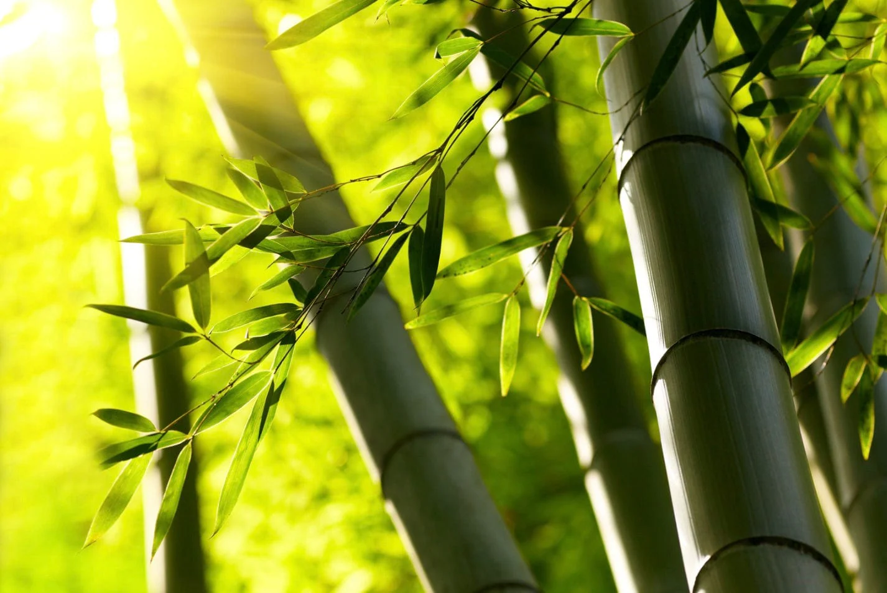
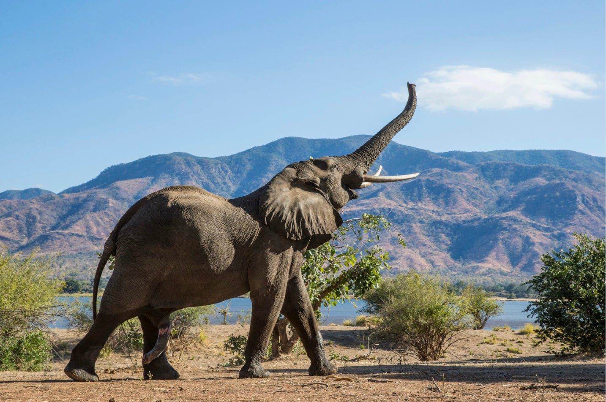
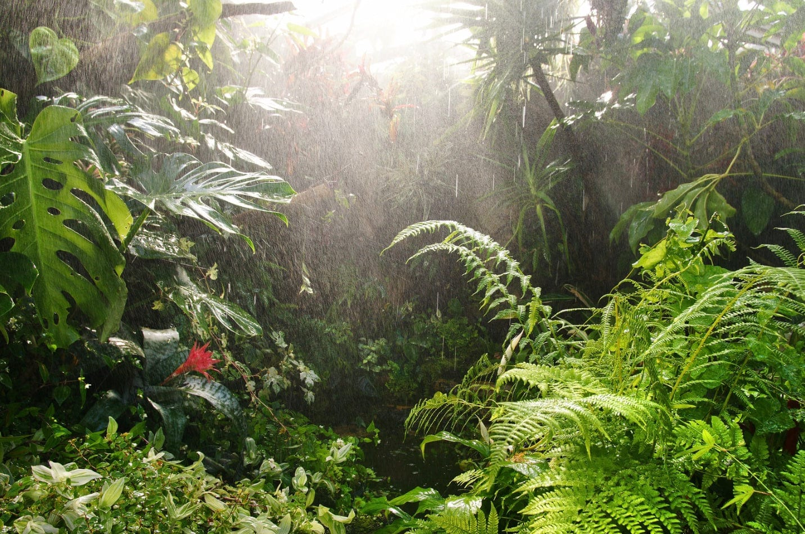
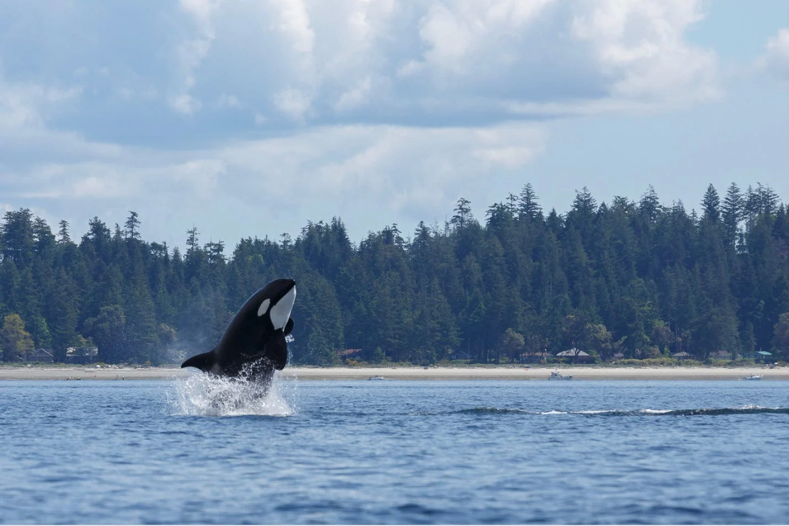

Dams have fragmented two thirds of the world's great rivers shape our planet and have created some of its most beautiful landscapes.
Florists create beautiful floral arrangements and bouquets for various occasions, and their work involves more than just arranging flowers; they also stock shops, package and deliver products, and consult with customers.
through an intricate network of fungi in the soil dubbed the “Wood Wide Web”. It connects trees at their roots, allowing them to communicate by sending signals about upcoming threats like droughts or disease
Turns out, dolphins actually have names for one another. Scientists have found that these marine mammals use a distinctive whistle to identify each other. When a dolphin hears their own “name” called to them, they respond.
African buffalo herds actually use a form of voting when trying to decide which direction to travel in. One at a time, adult females will stand up and look in a certain direction before sitting down. Whichever direction gets the most amount of looks is typically where the herd travels.
Bamboo also happens to be the worlds fastest growing plant. One species of bamboo can even grow 35 inches in a single day, and some species reach full maturity in just 90 days!
Elephants actually have a larger and denser temporal lobe, comparatively. The temporal lobe is commonly associated with memory acquisition, allowing elephants to have an incredible memory, so they will never foget you.
Forests actually move so much water from the soil into the atmosphere that they end up creating rain. Its called the Biotic Pump Theory.
All whales, dolphins, and porpoises are classified as Cetacea, or cetaceans which is derived from the Ancient Greek word meaning sea monster. Cetaceans are split into two groups: toothed and baleen whales. Orcas are actually the largest species in the dolphin family. They are the ocean’s top predator, preying on a range of marine species (sometimes even whales!).